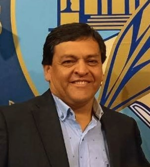

Un espacio de trabajo y reflexión conjunta entre abogados, escribanos y agrimensores, dedicado a las cuestiones jurídicas y territoriales de la Patagonia.
El Ateneo Jurídico Territorial reúne a profesionales del derecho, el notariado y la agrimensura para abordar de forma conjunta los conflictos y proyectos donde lo legal y lo territorial se cruzan: dominio, límites, catastro, ordenamiento territorial, contratos y todo aquello que exige mirada jurídica y mirada técnica al mismo tiempo.
Asesoramiento y patrocinio en materia civil, contractual y territorial.
Instrumentación pública, escrituración y seguridad jurídica de los actos.
Mensura, deslinde y relevamiento territorial con base técnica y catastral.
Graduada Abogada por la Universidad Nacional de la Patagonia San Juan Bosco y posteriormente continuó su trayecto académico como escribana. Se ha desempeñado como Presidenta del Colegio de Escribanos de la Provincia del Chubut. Es docente de la Cátedra de Derechos Reales de la Facultad de Ciencias Jurídicas de la Universidad Nacional de la Patagonia San Juan Bosco.

Graduado Agrimensor por la Universidad Nacional de la Patagonia San Juan Bosco en 1998 Ha sido Director General de Catastro de la Provincia del Chubut y Presidente del Tribunal de Ética del Colegio Profesional de Agrimensura de la Provincia del Chubut.
Graduado Abogado por la Universidad Nacional de la Patagonia San Juan Bosco. Se desempeña en la Asesoría Letrada del Ministerio de Economía de la Provincia del Chubut.
Graduado ingeniero agrimensor por la Universidad Nacional de Córdoba en 2015 y Magister en Aplicaciones de Información Espacial en 2020 tambien por la Universidad Nacional de Córdoba. Su formación profesional incluyo una beca profesional en la Comisión Nacional de Energía Atómica y una pasantia en la Unidad de Investigaciones Cientificas de la Agencia Espacial Italiana. Fue presidente del Colegio Profesional de Agrimensura de la Provincia del Chubut y es el impulsor de O'CONNOR Ingeniería y Agrimensura. Es Diplomado en Desarrollo de Nuevos Negocios, Diplomado Sanmartianiano y estudiante de Derecho por la Universidad Nacional de la Patagonia San Juan Bosco. Ha sido docente terciario, de grado y posgrado. Cuenta con diversas publicaciones en el ambito de datos espaciales en general y de la interferometría en particular.
Artículos, conclusiones de reuniones del grupo y dictámenes sobre casos de interés jurídico-territorial.
Una propuesta desde donde comenzar a analizar su implementación de cara a las nuevas activiades sociales y económicas en la Provincia
Ver Presentación →Síntesis de lo debatido y acordado por el grupo en su última reunión de trabajo. [Placeholder.]
Leer más →Análisis conjunto de un caso concreto desde la perspectiva jurídica y técnica. [Placeholder.]
Leer más →Contenidos, normativa y lecturas de referencia para el trabajo del ateneo.
Para consultas, propuestas de colaboración o participación en el ateneo.